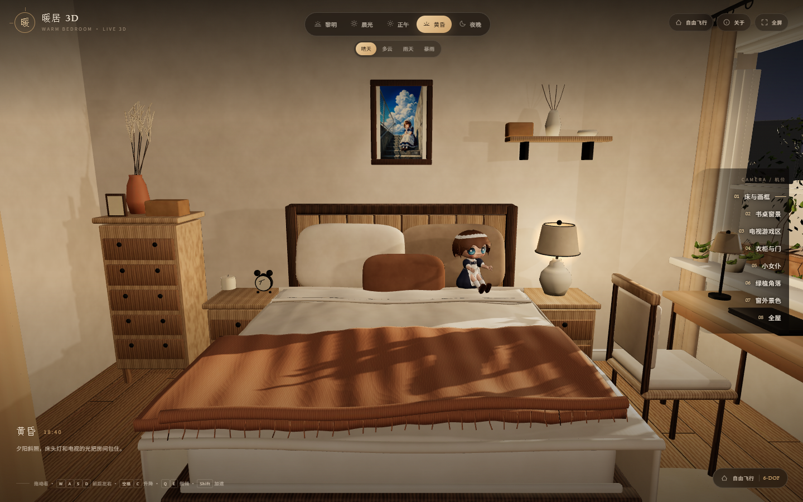
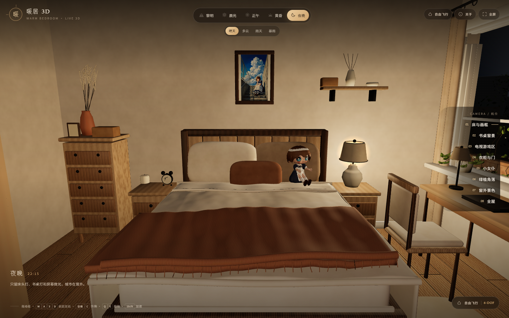
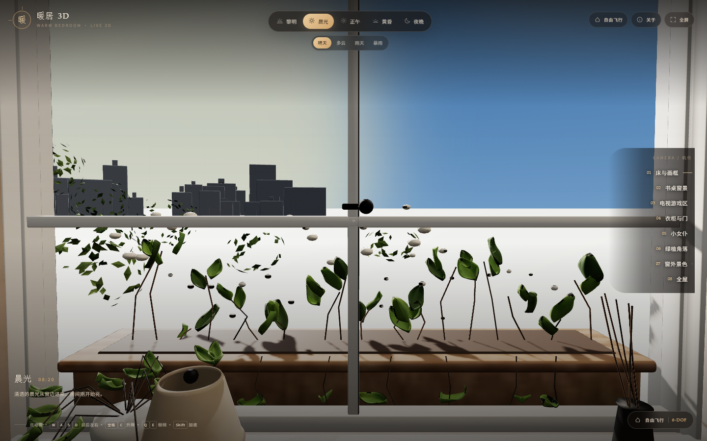
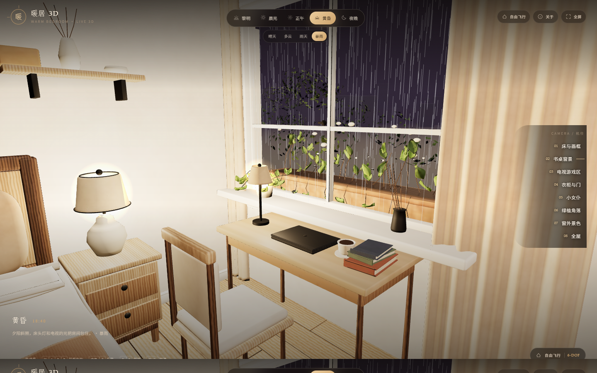
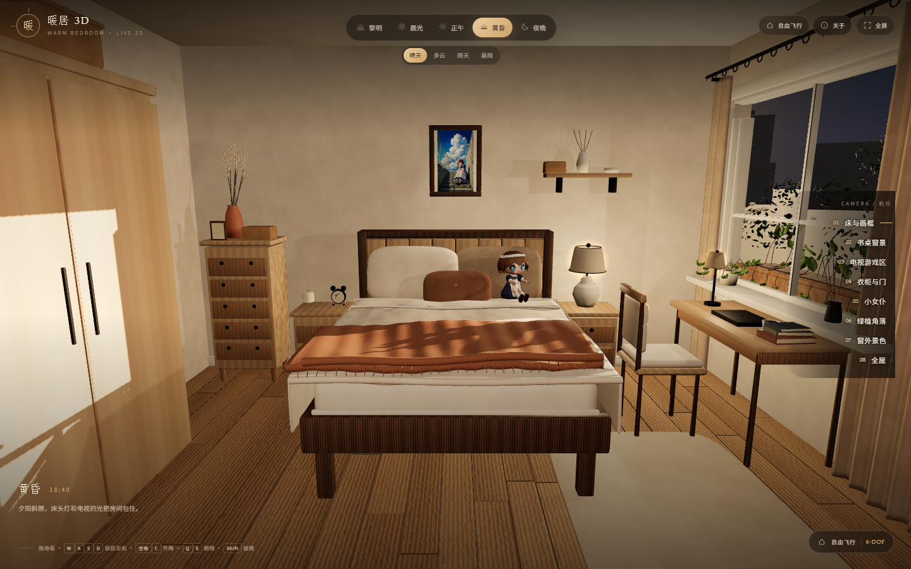

Warm Bedroom v2 · Live 3D · 四问题修复 · 2026-10-20
按你 15:54 修改后的建模（warm_bedroom_v2.blend）重新烘焙的实时 3D 卧室。相机是真 6 自由度自由飞行：位置（X/Y/Z，含升降）和朝向（偏航/俯仰/侧倾）互相独立。窗外是真几何景观，雨天有实时雨粒子，光照按你 scene_controller.py 的预设走。





W A S D 前后左右，空格/C 升降，Q/E 侧倾，Shift 加速，滚轮变焦。手机：拖动看 + 左下摇杆 + 升降盘。位置朝向互相独立，能飞到任意高度 / 角度贴近细节。| 操作 | 效果 |
|---|---|
| 拖动鼠标 / 手指 | 摆动视角（偏航 + 俯仰） |
| W A S D / 方向键 | 前后左右移动；Shift 加速 |
| 空格 / C | 上升 / 下降（竖直移动） |
| Q / E | 左右侧倾（roll） |
| 右键拖动 / Shift+拖动 | 平移相机（不转视角） |
| 滚轮 | 视野缩放 |
| 右侧 8 个机位 | 床与画框 / 书桌窗景 / 电视 / 门柜 / 女仆 / 绿植 / 窗外 / 全屋 |
| V / 右上角模式 | 切换 自由飞行 ↔ 环绕观察 |
| 1–5 · 6–9 | 切时间 · 切天气 |
窗外是把真实的花园几何烘焙进 Web 模型（窗台花箱、花园花卉、绿篱、近 / 中景树），加上程序化天空球、地面和城市远景；夜晚有城市灯光，晨昏有对应天色。雨天窗外有 3D 雨线 + 玻璃雨痕，暴雨更密更快并随机闪电；同时室内灯自动打开，保证雨天也能看清房间。
| 路径 | 说明 |
|---|---|
| warm_bedroom_v2.blend | 你的最终工程（15:54，标准）；只改了书桌灯/电视光/画灯三处位置 |
| user_edit_20261020_1554.blend | 修改版只读副本 |
| website/index.html | 主站，双击即开（内嵌 43.5 MB assets.js） |
| website/app.js | 6-DOF 相机 / 照明 / 雨 / UI |
| source/bake_web_model.py | 从 .blend 重新烘焙 GLB + 8 张 atlas |
| source/build_assets_js.py | 把 GLB/贴图重打包为 assets.js |
| source/fix_light_positions2.py | 灯具位置修复脚本 |
| renders_v2/previews/ | 桌面 / 夜晚 / 窗外 / 暴雨 / 电视 / 全屋截图 |
| website_360_legacy/ | 旧 360° 单文件站（保留） |
原场景 90 个程序化材质无法直接进 WebGL，按集合拆成 8 组：建筑 / 家具 / 女仆 / 窗外近景 用 4096²，软装（床品 / 装饰 / 绿植 / 窗饰）用 2048²；城市远景用平面颜色；电视与画框保留原始高清图。GLB 22 MB，实时几何约 35 万三角面。